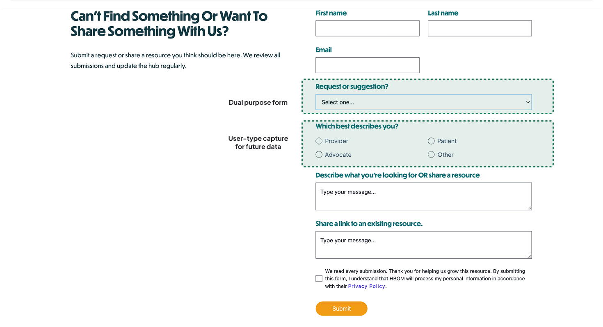

Brief
NVP is HBOM's food-as-medicine initiative, connecting Medicaid patients to FAM and ILOS nutrition benefits. The Knowledge Hub is the searchable resource library behind its public landing page, nutrivp.org.
My Role
I owned the hub end to end: research, information architecture, filter logic, and the Webflow build.
01
Everyone landed on the same page — and left without an answer.
nutrivp.org announced that FAM and ILOS benefits existed, then offered nowhere to go next: no library, no filter, no way back in. Coverage varies by plan and region, so the question people actually had, what does my plan cover, had no home, and even who are you was fuzzy, since provider, patient, and advocate roles overlap more than a clean label admits.
I don't know what actually applies to me.
what people kept askingGoal
A single searchable hub where a provider, a patient, and an advocate each find their own way in.
02
Target Users
Three roles, three different first questions.
Provider
"I need to refer a patient — fast."
Patient
"What does my plan actually cover?"
Advocate
"I need something credible to share."
03
Research
I audited Tufts Food is Medicine, the HHS/ODPHP FAM hub, StoryCorps, and the American Heart Association's Healthcare x Food for tone and structure.
Every FAM site reviewed treated visitors as one undifferentiated audience.
Download, video, or external link, nothing told you which one you'd get before you clicked.
None offered a path to request or suggest a resource that was missing.
04
Features
Three places the research turned directly into an interface decision.

Find by who you are, then narrow by what you need
User-type entry (Clinician · Patient · Advocate) sits above Topic and Media-type filters. "All" is the default — the filters are non-gating, so someone who's both a provider and a patient (or claims neither label) is never forced to self-identify to see resources.

One form for two needs
"I'm looking for a resource" and "I want to suggest one" share a single toggle form, reviewed by HBOM before publishing. "Which best describes you?" stays optional.

Trust signals for health content
Each resource opens to an org logo or cover banner, an estimated read time, its source, and open-in-new-tab — the cues that make unfamiliar medical resources feel trustworthy.
05
Impact & Takeaways
Built and handed off to HBOM; public launch is pending, so these are learnings, not usage numbers.
A logo, a source, an estimated read time, small cues that make an unfamiliar medical resource feel safe to click.
The forgiving, non-gating filters were the direct payoff of realizing "who are you" doesn't have one clean answer.
Also edited a 30-second patient reel, which deepened my grasp of the field and the organization.